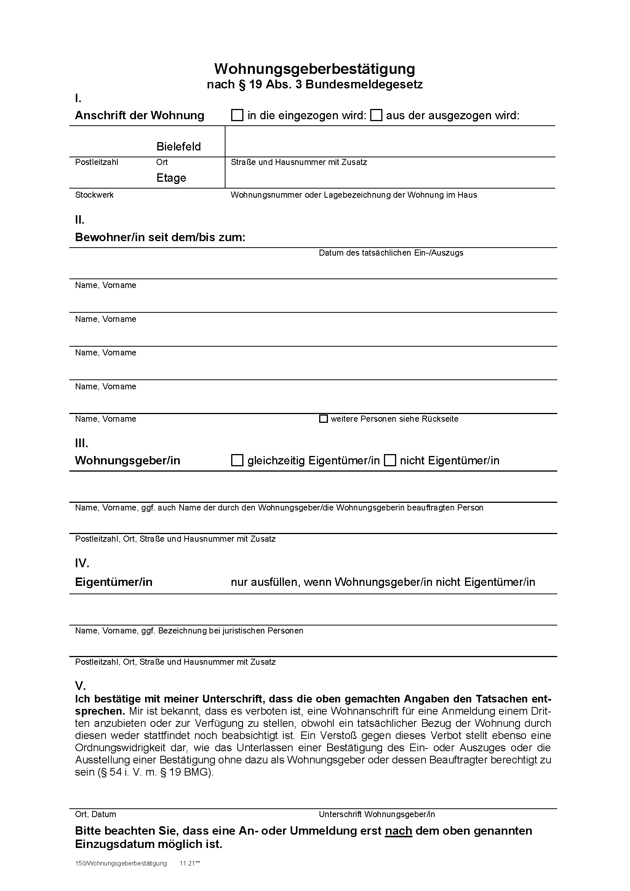

Comment s'expatrier pour les études?
Trouver logement à Bielefeld
a. Avec l’aide de la Studierendenwerk (Colocation/"WG" ou logement seul)
En première année, vous êtes prioritaires pour obtenir un logement du Studierendenwerk; vous recevrez un mail de welcome@uni-bielefeld.de auquel il faudra répondre pour l’obtenir.
Si vous avez des difficultés ou insécurités, les coordinateurs des cursus franco-allemand sont là pour vous aider à l’adresse bipag@uni-bielefeld.de.
b. Dans les annonces privées
La procédure pour un logement seul est similaire à une colocation, et ne sera donc pas détaillée ici (pour l’instant).
La procédure suivante est celle à suivre pour une colocation (WG).
Vous pouvez commencer vos recherches sur wg-gesucht.de, qui est l’outil le plus répandu. Une fois le choix fait, contactez
par message à travers l’application/le site. Si votre présentation est convaincante, on vous contactera pour une « interview » (aussi appelé « casting »).
Si vous êtes accepté dans la WG, il est temps de faire les papiers et d’installer ses meubles.
La procédure à suivre (dans le cas d’une colocation de l’université) :
Vos colocataires vont d’abord signer un document pour prouver qu’ils vous acceptent comme nouveau membre de la colocation.
Il ressemble à celui-ci :

De votre côté, vous devez remplir un formulaire en ligne (disponible en allemand ou en anglais – bouton en haut à droite)
qui se trouve ici : http://tl1host.eu/SWBI/#home
Si vous ne possédez pas de passeport, écrivez le n° de votre carte d’identité dans le champ « passeport number ».
Dans l’encadré « other application fields » n’oubliez pas de renseigner le nom de vos colocataires à la ligne
« Who is already living in the flat? (name of roomates) ». De la même manière que vos colocataires renseignent le n° pour identifier la colocation,
le formulaire demande les prénoms et noms de vos colocataires.
Dans le champ « Desired date of moving in » choisissez une date. Vous pourrez clarifier les choses s’il y a un problème avec la personne qui vous
contactera à la réception de votre dossier. Vous recevrez un mail de confirmation. N’oubliez pas de cliquer sur le lien! Attendez vous à payer une
caution.
{kind=link}
S’installer
Les meubles d’une annonce privée sont parfois proposés à l’achat ou gratuitement. Si vous n’avez aucun meuble, vous pouvez vous en procurer très facilement dans la catégorie don (zu verschenken) des petites annonces Ebay (Bielefeld). Pour les achats de seconde main (plutôt léger, sauf si vous avez un véhicule) en magasin physique, rendez-vous dans un Recyclingbörse! (Große-Kurfürsten-Straße 81 ou Blomestraße 29). Pour du petit matériel (type cuisine : spatule, etc.) vous pouvez vous rendre à EuroShop ; il y en a plusieurs en ville (Jahnplatz).
Redevance Audiovisuelle (Rundfunkbeitrag)
A votre arrivée dans votre logement à Bielefeld, vous devrez vous inscrire pour payer la redevance audiovisuelle. Elle s’élève à 17,50€ par mois.
Le formulaire peut être trouvé à l’adresse suivante (Wohnung anmeldung):
https://www.rundfunkbeitrag.de/index_ger.html
Vous obtiendrez un Beitragsnummer qu’il est toujours bon de conserver.N.B. : Si le compte bancaire utilisé pour payer la redevance
audiovisuelle est n’est pas un compte allemand, on va vous demander par la suite une signature de la part du détenteur du compte, dans
le cadre de la procédure SEPA.
Si vous vivez seul(e), la procédure est désormais terminée.
Si vous vivez dans une colocation (WG) :
Si vous voulez simplifier vos démarches, vous pouvez choisir une seule personne pour être prélevée et lui rembourser le montant en vous
arrangeant avec elle. Pour cela, il faut contacter le Beitragsservice pour l’informer de votre choix ici (en joignant des informations
permettant d’identifier facilement cette personne : adresse, Nom, Beitragsnummer) :
https://www.rundfunkbeitrag.de/buergerinnen_und_buerger/formulare/kontakt/index_ger.html
La réponse, par courrier, est généralement longue (quelques mois). Cette démarche vous permet d’organiser les dépenses au sein de la
colocation et ainsi payer moins par personne et par mois (exemple : 3,50€ pour une colocation à 5).
Lors de votre départ, pensez à vous désinscrire (grâce au formulaire de désinscription) :
https://www.rundfunkbeitrag.de/buergerinnen_und_buerger/formulare/kontakt/index_ger.html
S’inscrire à la mairie
Vous devez vous inscrire à la mairie dès que possible et sous les 10 jours de votre arrivée dans votre logement. Pour cela, il faut prendre rendez-vous sur ce site. Vous pouvez choisir le lieu le plus proche de chez vous, ou celui proposant un rendez-vous plus rapide. Vous devez choisir sur « Anmeldung in Bielefeld aus dem Ausland » dans la liste déroulante « 1 Person » puis en bas de page « Termin vereinbaren« . Une page vous annonce alors les documents à apporter :
- Carte d’identité, si possible passeport également,
- Document d’hébergement « Wohnungsgeberbestätigung » (il ressemble à ça mais il sera déjà rempli) que vous recevez en même temps que votre contrat de location